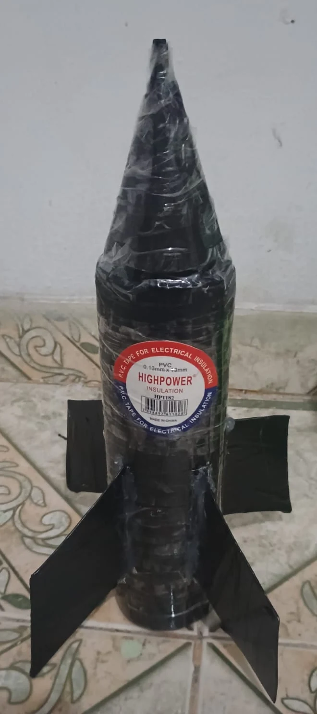
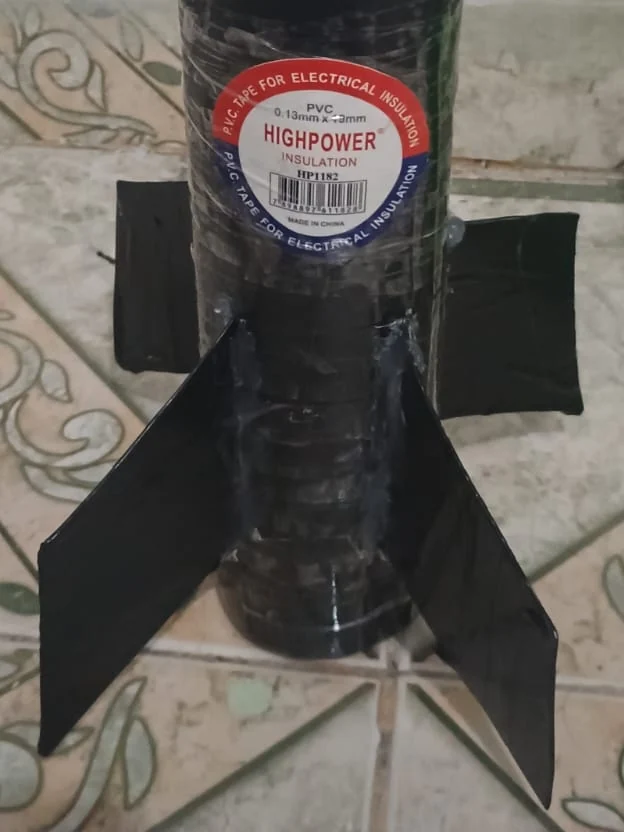

DE LA BOTELLA
AL DESPEGUE.
Tres versiones y una meta de cinco metros.
Así construí mi
cohete, lo probé y volví a intentarlo.
Un proyecto de
Santiago Cundumi Solis

Aprendí probando.Ver las partes
LA PREGUNTA ¿Una botella reutilizada puede subir por lo menos cinco metros?
Ver qué pasóTres versiones.
Varios cambios.
El trabajo era construir un cohete con una botella reutilizada y tratar de que subiera por lo menos 5 m. Fui cambiando el diseño después de las pruebas, porque quería entender qué podía ayudarlo a volar mejor.
Los materiales que usé
Botellas plásticas, vinagre, bicarbonato, cinta, palitos de madera, tubo transparente, material para la punta y las aletas, cierre para la botella y soporte verde.
-
La primera versión
Empecé con una botella sencilla y preparé una prueba en el parque. Esta versión subió cerca de 2 m y terminó siendo la que más altura alcanzó. Todavía le faltaban unos 3 m para llegar a la meta.
-
Una botella más grande
Después probé con una botella de mayor tamaño, pero subió cerca de 0,5 m. Tener más capacidad no dio un mejor resultado. Como también cambiaron otras cosas, esa prueba no me permite decir que el tamaño de la botella fuera la única causa.
-
El diseño terminado
Agregué aletas, una punta cónica y cinta para unir las piezas. El cohete quedó con un acabado negro y lo coloqué sobre el soporte verde para la prueba final. Subió aproximadamente 1 m, más que la botella grande, pero menos que la primera versión.
Cada parte
tiene una función.
Usé una botella, una reacción química y varias piezas hechas a mano. Selecciona una parte para ver por qué la agregué.

Mantener la dirección.
Las aletas ayudan a mantener la dirección del cohete. También añaden masa, así que poner más material no siempre mejora el vuelo.
La reacción
que lo impulsa.
Yo entiendo que el cohete no sube solamente porque aparezcan burbujas. La reacción produce un gas, ese gas aumenta la presión dentro de la botella y la salida del contenido produce el empuje.
Del vinagre al gas
El ácido acético del vinagre reacciona con el bicarbonato de sodio y forma acetato de sodio, agua y dióxido de carbono. Este último es el gas que vemos en las burbujas. La reacción se puede escribir así.
CH3COOH + NaHCO3 → CH3COONa + H2O + CO2
Presión y movimiento
Si el gas se acumula en la botella cerrada, la presión aumenta. Cuando salen líquido y gas por la abertura, el cohete recibe un empuje en sentido contrario. Esto se relaciona con la tercera ley de Newton, la de acción y reacción.
El peso tira del cohete hacia abajo. Para empezar a acelerar hacia arriba, el empuje vertical tiene que superar ese peso y cualquier roce que se oponga a la salida. Por eso importan tanto la reacción como la masa del diseño y la forma en que se suelta del soporte.
Todo el proceso.
El lanzamiento real.
Desde las primeras fotos hasta la prueba final.
Los capítulos
originales están en español y el cierre de resultados está en
inglés.
Ir a un capítulo
5 min 23 s · 1280 × 720 · Activa CC para ver los subtítulos del audio original.
Descargar el videoEl despegue final aparece cerca del minuto 4:04. El punto más alto sale del encuadre, por eso la altura sigue siendo mi estimación.
Mejor acabado.
Menor altura.
La primera versión fue la que más subió. Ninguna llegó a los cinco metros y eso también es parte del resultado.
Para comparar dividí la altura de cada versión entre 5 y multipliqué por 100. Por ejemplo, 2 ÷ 5 × 100 = 40 %. Ese porcentaje muestra cuánto se acercó el cohete a la meta, no una nota del trabajo.
Primera versión
≈ 2 m40 % de la meta Faltaron 3 m
Botella grande
≈ 0,5 m10 % de la meta Faltaron 4,5 m
Diseño final
≈ 1 m20 % de la meta Faltaron 4 m
Son aproximaciones que recuerdo de las pruebas, no mediciones con instrumentos. Hay un resultado por versión y cambié varias cosas entre los intentos.
Qué puedo decir de estas pruebas
El diseño final mejoró cerca de 0,5 m frente a la botella grande, pero quedó 1 m por debajo de la primera versión. Eso me hizo ver que mejorar la apariencia y añadir piezas no es lo mismo que conseguir más altura.
Cambié varias cosas entre los intentos y no tengo una serie de mediciones repetidas. El peso añadido, una fuga, la inclinación o el roce con el soporte pudieron influir, pero con estos datos no puedo asegurar cuál afectó más el resultado.
Una masa
aproximada.
Usé una botella personal de Big Cola, un cuarto de vinagre y media caja pequeña de bicarbonato. Para calcular la masa tuve que suponer algunos valores.
Tomé una botella de 400 mL y una caja de 50 g como ejemplo, porque no confirmé esas cantidades en las etiquetas. Para el cohete seco supuse 60 g. Así puedo mostrar cómo hice la cuenta sin presentar esos valores como si los hubiera pesado.
Los 185 g equivalen a 0,185 kg. Con la gravedad de 9,81 m/s², su peso sería 0,185 × 9,81 ≈ 1,8 N. Es una referencia del peso inicial, no una medición del empuje; además, el cohete pierde masa cuando sale parte de su contenido.
Botella supuesta de 400 mL × ¼
≈ 100 mLCaja supuesta de 50 g × ½
≈ 25 gMasa supuesta, sin el soporte
≈ 60 gUnos 100 g de vinagre + 25 g de bicarbonato + 60 g de cohete. No confirmé las etiquetas ni la masa con una balanza. Con una botella de 400–500 mL, un cuarto de vinagre y un cohete seco de 40–80 g, serían unos 165–230 g en total, manteniendo 25 g de bicarbonato.
En la próxima prueba
necesito medir mejor.
“Volvería a la versión más liviana, pesaría cada pieza y cambiaría una sola cosa a la vez.”
Primero pesaría la botella y cada pieza añadida, y anotaría la cantidad de vinagre y bicarbonato antes de cada intento. También revisaría el cierre y que el cohete pudiera salir del soporte sin quedarse rozando.
Después repetiría cada versión varias veces, cambiando una sola cosa a la vez. Así podría comparar, por ejemplo, qué ocurre al añadir las aletas sin modificar al mismo tiempo la botella y las cantidades de la mezcla.
Usaría una cámara fija y una referencia visible de altura para registrar todo el recorrido. En la grabación final el punto más alto sale del encuadre, por eso no puedo usarla como una medida exacta del vuelo.
¿Y el cálculo de 5,1 m?
Es un ejemplo ideal, aparte de la meta de 5 m. Si la velocidad hacia arriba al terminar el empuje fuera 10 m/s, subiría además 10² ÷ (2 × 9,81) ≈ 5,1 m sin resistencia del aire. Esa velocidad es supuesta y no fue medida.
Lo que aprendí
con las pruebas.
No alcancé la meta de 5 m, pero pude ver que una botella más grande o un diseño con más piezas no necesariamente vuelan mejor. La primera versión fue la que más subió, aunque la última se veía más terminada.
Para mí, lo principal fue entender que construir también implica probar, registrar lo que pasa y reconocer cuando algo no funciona como esperaba. En un siguiente intento me concentraría en medir mejor y hacer cambios que pueda comparar.